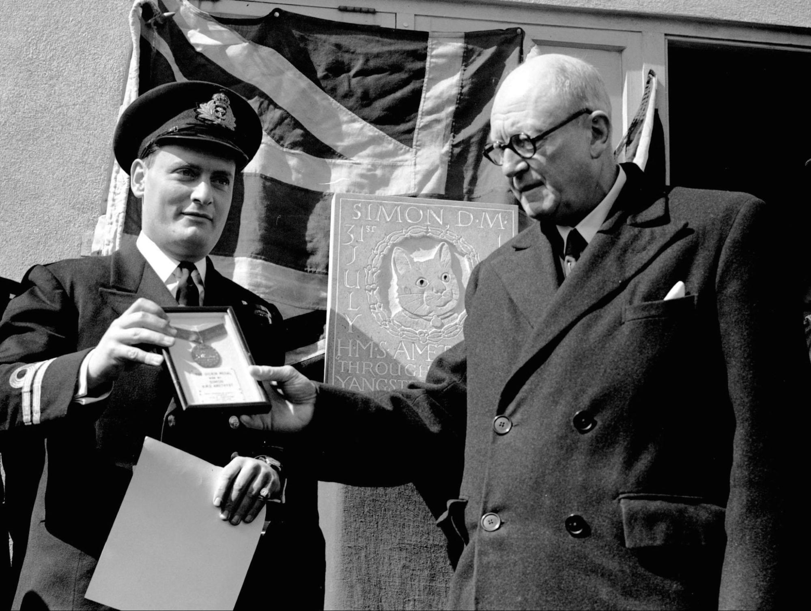

Everyday Systems: Podcast : Episode 61
VC Cat
Hi! This is Reinhard from Everyday Systems.
Today I’m going to talk about something I call VC Cat.
VC in this context stands for Victoria Cross, not Venture Capitalist, and “cat” is like the animal, and I’m afraid it all requires a bit of a wind-up.
Many years ago I podcasted about something called the “what the hell” effect, a brilliant term that I cannot claim credit for inventing (that goes to dieting researchers Janet Polivy and C. Peter Herman).
As you may recall, the what the hell effect is what happens after you make a perhaps minor slip up against some resolution you’ve made and then you’re like “what the hell, I screwed up, I might as well go all the way,” and that minor mistake opens the floodgates to total disaster. This is a real, documented phenomenon, by the way. In the scientific literature it’s called “counterregulatory behavior.” (Doesn’t have quite the same ring to it, I think I’ll stick with “what the hell” effect.)
The canonical example: you’re on a diet and against the rules you eat a cookie. One cookie. One small cookie. Maybe one bite of one small cookie. You shouldn’t have done that. It was just a bite, one tiny bite, but it was against the rules. You failed. On the binary scale of success vs. failure, with that one tiny bite you failed just as much as you would have if you’d eaten the whole bag. So… what the hell? Might as well go ahead and eat the whole bag.
Perfection -- that seems like something worth striving for, something inspiring. But when all of a sudden, we’re no longer perfect, when the possibility of the glory of perfection is removed by even the tiniest infraction, all too often, we are inclined to just throw our hands up, say “what the hell,” and flop out, surrender unconditionally.
We could stop ourselves in the middle of this mess, catch ourselves before falling too far, but “pretty good” just doesn’t capture the imagination in the same way as perfection. Terrible, on the other hand, does. And immediately after the tiniest slip “terrible” with its drama starts to exert a sometimes irresistible tug (not to mention the incentive of the mere physical pleasure of eating a whole pint of ice cream or whatever -- gluttony and outraged perfectionism are strange but highly effective bedfellows).
There’s something rationally absurd about this tug. But psychologically, for many of us, it’s powerful. I think it’s because we’re such storytellers about ourselves. To be perfect, that’s great. That’s a good story. To be a disaster. Well, that’s unpleasant, but it’s a good story at least. Maybe even a better story! To muddle through, to be somewhere in the middle -- that’s boring. If we can’t be good, we can at least be interesting. The smallness of our failure as much as the failure itself offends us. The messiness, the incompleteness of it.
So if we can’t have perfect success, let's at least have perfect failure.
Of course, we are kidding ourselves here big time. There’s nothing more common and less interesting than people giving themselves over to the “what the hell” effect. But so the psyche whispers to us. Badness and failure are interesting, if they’re big enough. For some reason it’s a lie we are predisposed to believe, at least about ourselves.
This danger isn’t just limited to diet and traditional self-improvement concerns. I think it goes broad and deep. It’s at the root of a lot of self destructive behavior. Part of being self destructive is pure self hatred, a desire to take revenge on yourself. DIY justice on the bad you. But part of it is a kind of plan B. Since plan A, perfection, didn’t pan out, at least we can get the attention, the interest, the good story of full-bore failure. It can also creep into our deepest sense of ourselves. We can think “what the hell” not just about a particular episode, but about our entire lives.
In my previous podcast on the what the hell effect, I gave some tips around how to catch yourself when you start to fall for it on a micro-scale with a technique I call “negative qualification.” In a nutshell it’s a resolution to document any habit failures preferably with a number, as an incentive to catch yourself so you don’t have to record anything too embarrassing. It’s a good technique. And I still use it, or a version of it, in my Life Log / personal punch cards. Do check out that episode if you’re interested in a practical technique for mid-failure damage control. But what I’m interested in today is the macro what the hell effect, how to counter that: the feeling of “I am a failure -- what the hell. I have fallen short in some way therefore I’m in ‘what the hell’".
This is something that is harder to deal with with a mere practical technique. It requires a bit of a cognitive shift. That’s harder to deliberately engineer. But there is an image, from a passage by C.S. Lewis, that I find helpful in making this shift. I like to call it to mind when I catch myself falling into this way of thinking, and just every now and then, as preventative medicine.
Before I read this quote, one thing my fellow Americans, among others, may need to be reminded of: VC stands for Victoria Cross, which is the highest military honor in Britain. It’s like the Congressional Medal of Honor in America.
OK, here’s the quote:
“Human beings judge one another by their external actions. God judges them by their moral choices. When a neurotic who has a pathological horror of cats forces himself to pick up a cat for some good reason, it is quite possible that in God's eyes he has shown more courage than a healthy man may have shown in winning the V.C. When a man who has been perverted from his youth and taught that cruelty is the right thing, does some tiny little kindness, or refrains from some cruelty he might have committed, and thereby, perhaps, risks being sneered at by his companions, he may, in God’s eyes, be doing more than you and I would do if we gave up life itself for a friend.“
End quote.
This is from a larger passage which is also relevant and worth reading, but I particularly love this delightfully ridiculous image of the neurotic picking up a cat and winning the Victoria Cross for it, and it keeps coming back to me. And the bit about the man who should be thinking “I’ve been perverted from my youth up, what the hell” getting partial credit (infinite credit!) for some “little kindness” or even less, from some mere “abstaining” from some worse thing that he didn’t do -- I think that’s important. The main point C.S Lewis was getting at was judge not others, because you don’t know what’s going on under the hood, you don’t know what “bad psychological material” they’re working with, the hand they were dealt, the psychological and social and even physical context in which their moral choices were operating. But it also works, and this is the sense in which I’m interested in it here, as a reminder to be careful not to judge yourself prematurely (positively or negatively)-- because you might be just as ill qualified for that.
When I am struggling with some little pathetic goal, with a challenge I’m embarrassed is even a challenge for me, with keeping some little failure from becoming exponentially larger, with feeling like a failure because of the littleness of my failures as much as the fact that they are failures, I remember the VC cat. It’s a striking, funny image. And yet, it’s a reminder that whatever level we’re struggling at, there’s something worthy, maybe even glorious about those struggles. We can’t quite know. But we can’t assume the opposite either. Doing some little but hard right thing in the midst of our mess could be as important or even more important in a cosmic sense than some clean, grand act of valor on the battlefield. That possibility is inspiring. It makes our little struggles seem big, so we don’t have to magnify them by turning them into big failures. The need for drama, by this slight of comic pragmatism, by this image of the VC Cat, is (sometimes, at least) appeased.
Sometimes at least, for me, and I hope it’s a helpful image for you as well.
That’s all for today. Thanks for listening.
© 2002-2025 Everyday Systems LLC, All Rights Reserved.